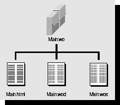
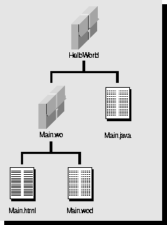

Table of Contents
Table of Contents  Previous Section
Previous Section
Components
To write a WebObjects application, you create components and then connect them. A component is a web page, or a portion of one, that has both content and behavior. Usually a component represents an entire page, so the word "page" is used interchangeably with the word "component." However, remember, that not all components represent an entire page. For example, a component might represent only a header or footer of a page, and you can nest that component inside of a component that does represent the entire page.
Each component is located in its own directory, named Component.wo, and generally contains these parts:
Figure 1 shows the contents of the Main.wo component from the HelloWorld example. (Main.wo is almost always the name of the first page of a WebObjects application.) In this example, the Main.wo component contains three files: a template in the form of an HTML file (Main.html), the code file (Main.wos), and the declarations file (Main.wod), which contains the bindings between the template and the code.

Figure 1. The Contents of a WebScript Component Directory
Typically, components contain some form of the three files shown in Figure 1; however, any given component might contain more or fewer files. For example, components whose code is written in a compiled language do not contain code files. A component may not need a code file at all; it may need only a template file and a declarations file. Another component might have a code file but no template file or declarations file. Plus, if you create a component using Project Builder or WebObjects Builder, you'll get a fourth file, Component.api, which contains API that should be made public to other components.
The next three sections describe more completely these template, code, and declarations files.
Template
You use a template (Main.html) to specify how the page you're creating should look. This file typically contains static HTML elements (such as <H1> or <P>) along with some dynamic elements. Dynamic elements are the basic building blocks of a WebObjects application. They link an application's behavior with the HTML page shown in the web browser, and their contents are defined at runtime.
An HTML template can also contain a reference to another component (called a reusable component or subcomponent) that represents a portion of an HTML page. This reference behaves just like a reference to a dynamic element.
Code or Script File
You use the code file (Main.wos) to define your component's attributes and actions. The attributes are called variables or instance variables, and the actions are called methods.
With WebObjects, you can write your code file in one of three programming languages: Java, Objective-C, or WebScript. Java is the language of choice for many people; others prefer Objective-C. Because both of these languages require compiling, they aren't as well suited to rapid prototyping as a scripting language is. For this reason WebObjects provides a scripting language named WebScript, described in the chapter "The WebScript Language". You may have noticed that the examples directory mentioned previously offers examples in all three languages.
Note: Java support is not available on the Mach or HP-UX platform.
The Main.wo component shown in Figure 1 uses a WebScript file to define its behavior. (The .wos extension signifies WebScript.) If you want to use Java or Objective-C, the code file resides at the same level as the Main.wo directory as shown in Figure 2. (In Project Builder, Java and Objective-C code files are shown under Classes instead of with the component under Web Components.)

Figure 2. Location of Code File for Java Component
You can mix languages. It's common to use WebScript to write your interface logic (that is, the files described in this chapter) and use Java or Objective-C to write your business logic. Many simple applications are written entirely in WebScript. Some programmers prototype using WebScript and then create a compiled version of the same application to improve performance.
Bindings
You use a declarations file (Main.wod) to define the bindings, or mapping, between the methods and variables you defined in your code and the dynamic elements in your template. For example in the HelloWorld application, the HTML template for the Main component contains two dynamic elements. The declarations file specifies that the first dynamic element represents a text field whose value maps to the visitorName variable in the component's script. When the user types a name in the text field, WebObjects assigns it to the visitorName variable. The declarations file also specifies that the second dynamic element is a submit button and that when the user clicks the button, WebObjects invokes the sayHello method.
Table of Contents  Next Section
Next Section